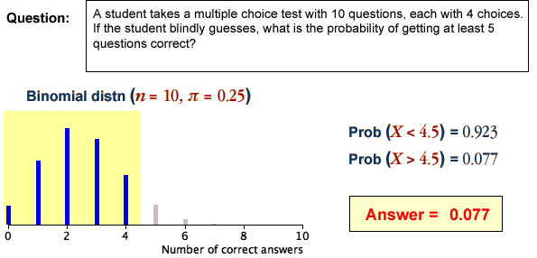

Evaluating binomial probabilities
If we are satisfied that a binomial distribution is appropriate, it can be used to obtain the probability of any number of successes. Binomial probabilities may be obtained using ...
Excel
In Excel, the function "BINOM.DIST()" can be used to find binomial probabilities. For example, if \(X \sim \BinomDistn(n=20, \pi=0.3)\) then Excel can easily evaluate the following probabilities:
(The last parameter to the Excel function determines whether a single probability is returned or a cumulative probability.)
Scientific calculator
The formula for the probability function can be used directly. For example, if \(X \sim \BinomDistn(n=20, \pi=0.3)\) then a scientific calculator can be used to evaluate the following probabilities:
Probabilities for ranges of counts
When finding the probability that the number of successes is within any interval, care must be taken with the wording of the question — think carefully about whether the 'extreme' value that is mentioned in the wording of the interval should be included.
| In words... | In terms of X | Using 1/2 |
|---|---|---|
| More than 5 | X > 5 | X > 5.5 |
| Greater than or equal to 5 | X ≥ 5 | X > 4.5 |
| No more than 5 | X ≤ 5 | X < 5.5 |
| At least 5 | X ≥ 5 | X > 4.5 |
| Fewer than 5 | X < 5 | X < 4.5 |
| 5 or fewer | X ≤ 5 | X < 5.5 |
The above table translates a few possible wordings for an interval into a range of counts. The final column provides an interpretation of each interval that most clearly expresses which counts are included.
We recommend translating any interval into its form using 1/2 before finding its probability.
Translating the interval in this way is particularly useful when using a normal approximation to evaluate the probability. In this context, it is called a continuity correction.
Examples
Each of the following questions involves a binomial distribution.

The binomial distribution of the number of 'successes' is displayed in a bar chart, with the values specified in the question highlighted. The sum of these probabilities (the bar heights) has been evaluated and is displayed on the right to give the answer.